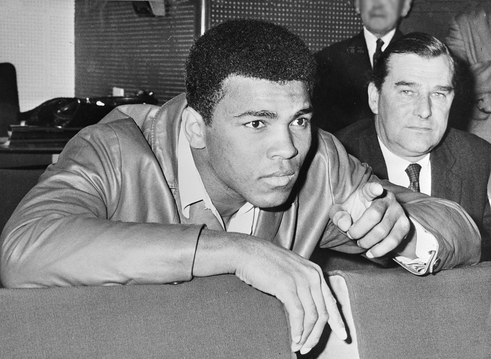

Muhammad Ali
Boxer, activist, icon, legend.

Muhammad Ali watchting fight, 1966
Here's a time line of Muhammad Ali's life.
- 1960 - Won a gold medal in the light heavyweight division at the Olympics in Rome
- 1964 - Defeated Sonny Liston to become the heavyweight champion of the world and changed his name to Muhammad Ali
- 1967 - Refused to be drafted into the Vietnam War and was stripped of his boxing titles and banned from boxing for several years
- 1971 - Returned to the ring and defeated Joe Frazier in the "Fight of the Century" to regain the heavyweight championship
- 1974 - Defeated George Foreman in the famous "Rumble in the Jungle" to regain the heavyweight championship
- 1981 - Retired from boxing with a record of 56 wins and 5 losses
- 1996 - Lit the Olympic torch at the opening ceremony of the Summer Olympics in Atlanta, Georgia
- 2005 - Was awarded the Presidential Medal of Freedom, the highest civilian honor in the United States, by President George W. Bush.
- 2016 - Passed away on June 3 at the age of 74.
"Muhammad Ali was not just a champion in the ring - he was a champion of peace and a fighter for justice. He fought not only for his own beliefs, but for the beliefs of people around the world who had been oppressed and marginalized."
Ban Ki-moon, former Secretary-General of the United Nations.